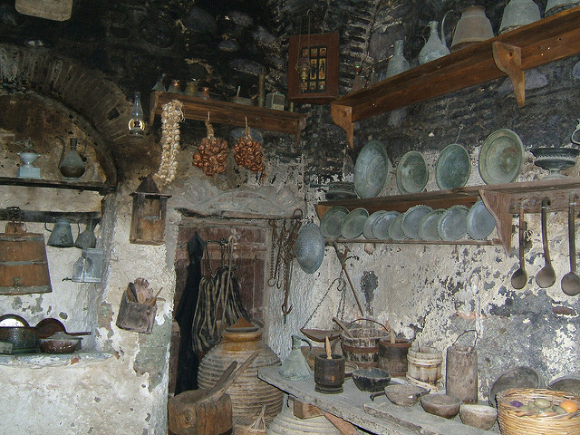

Women in premodern history traditionally had little to no power over their lives and their spheres of influence were limited exclusively to their homes. However, through this sphere of influence they were able to gain power within society which they normally would not have. One of the best examples of this would likely be Jezebel who used her influence within the home in order to alter her husband’s very belief systems. This level of influence would have been very difficult to gain as a male within the same household. We also see Theodora exerting power into Justinian’s decisions as emperor a great deal. The methods used are typically similar such as intelligence, relying upon the viewpoint of others, station presented by family, or the most obvious one their sexuality.
There are some examples of women using agency through either manipulation or deception. A few that aren’t on the website for instance include the The Pillow Book ’s author who was a woman and in writing the text she was able to dismiss many properties of what could be a power grab due to her femininity. Anna during her exile wrote the Alexiad which allowed her to dismiss any boasting of her father as a daughter being endearing to her father or in other words due to her position. It is not hard to see that these individuals are not sincere in their claim for position or actions as a result of femininity because they are not consistent.
The image on the right hand side of the webpage shows an ancient kitchen from Greece. This photo was selected to demonstrate some the environment the “ traditional ” Greek woman. The image to the left is an example of the layout of a traditional house. In this instance we are trying to emphasize the division that was put in place to keep the woman ’s sphere of influence separated from the rest of the house. In this case you can clearly see the bedrooms which have been nested in the back of the house and out of the public eye.